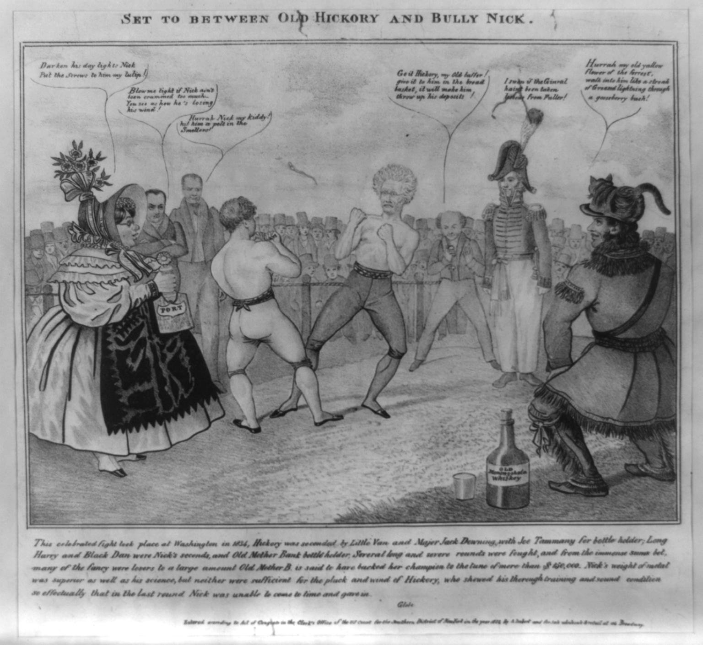

| Field | Detail |
| TOC Fit | Chapter 10 · Essay prompt 10.4 (The Bank War and the Panic of 1837) |
| Why Here | A pro-Jackson print stages the Bank War as a prizefight that Jackson wins against Nicholas Biddle, backed by “Mother Bank” and her money. Students can read it as an argument by its makers about who stood on each side of the Bank War, and set its picture of the Bank as a bought-and-paid-for interest against opposition prints of Jackson as a tyrant. |
| Treatment | Public-domain image; speech balloons and letterpress as transcribed in the repository record |
After Jackson removed federal deposits from the Second Bank of the United States in the fall of 1833, the Bank’s president, Nicholas Biddle, sharply cut back the Bank’s loans. He argued the Bank had to protect itself after losing the government’s money, but he also hoped the resulting credit squeeze would pressure Congress to restore the deposits and recharter the Bank. Businesses failed and petitions poured into Congress during the winter of 1833–34, the so-called Panic Session. New York lithographer Anthony Imbert deposited this print for copyright on March 5, 1834. It borrows the language and setting of popular bare-knuckle boxing (“the fancy” were boxing fans and gamblers). Henry Clay and Daniel Webster, leaders of the Senate opposition, stand in Biddle’s corner; Vice President Martin Van Buren, the comic Yankee character Major Jack Downing, and a frontiersman representing New York’s Tammany Democrats stand in Jackson’s. Editorial note. The speech-balloon and letterpress text is reproduced from the Library of Congress catalog description of the print (a public-domain federal transcription), keeping its spellings as given. The catalog abridged the account printed below the image; the full letterpress and two balloons the catalog omitted were completed and checked against the Library of Congress master image. The Library of Congress notes that this impression lacks the line “Drawn by one of the Fancy” found on other copies. CAUTION: This is an image made to persuade. Read it as the argument of Jackson’s supporters, not as a neutral account of the Bank War. Text transcribed for this reader from the repository image; illegible words are marked [illegible]. |
|
 |
|
UNIT 3 · AN EXPANDING NATION | HISTORY B17A | DANIEL GARZA, M.A.
|